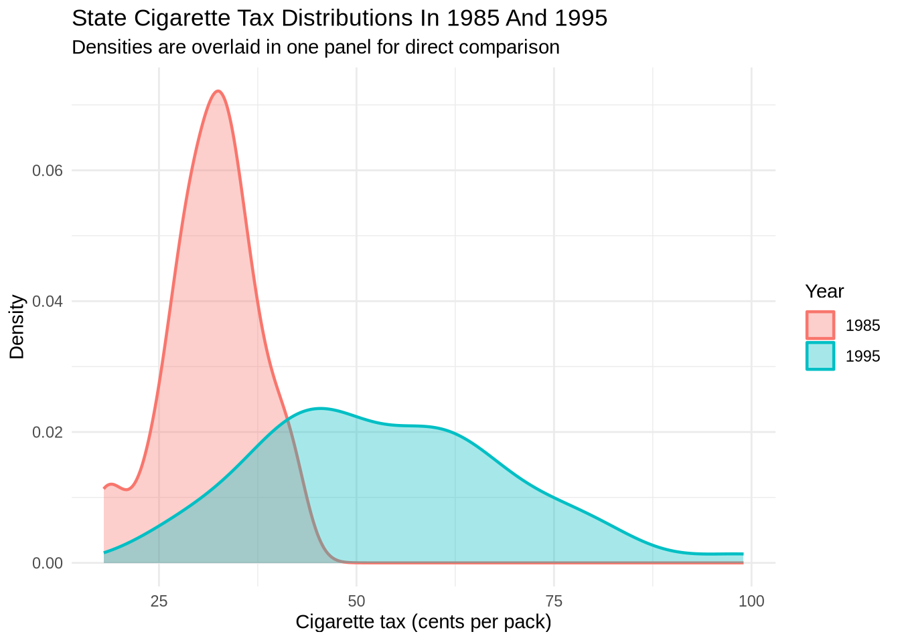
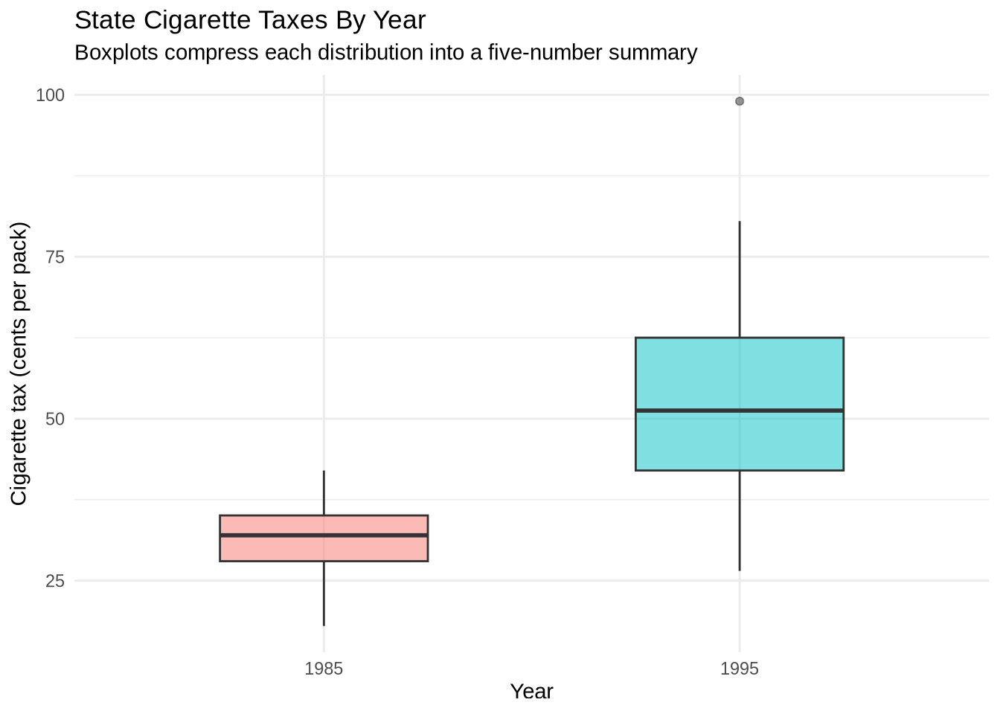
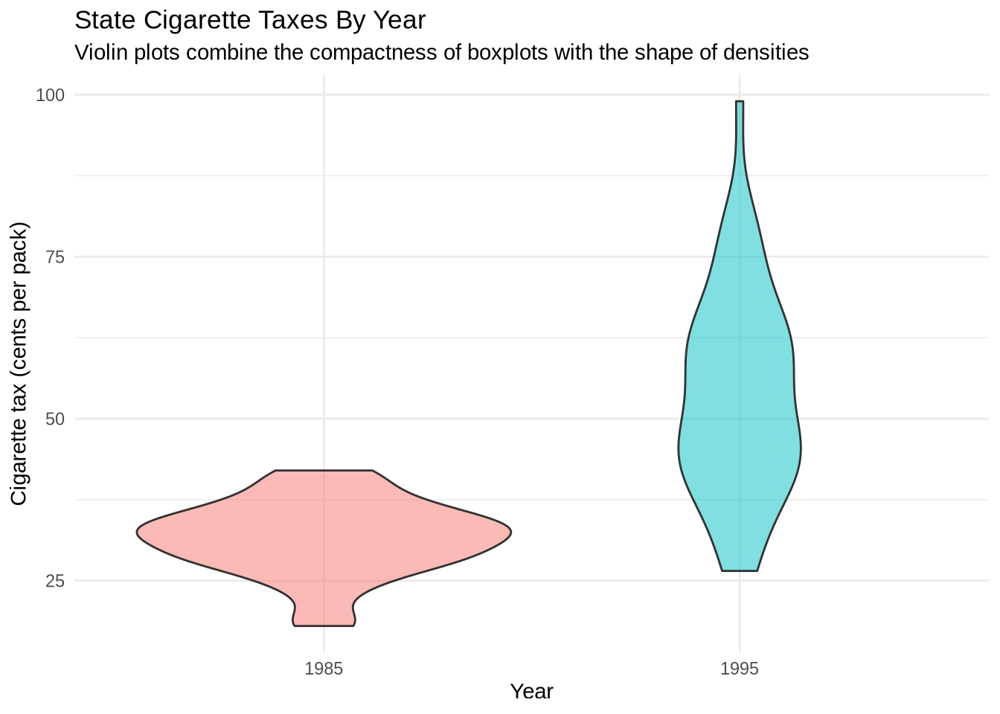
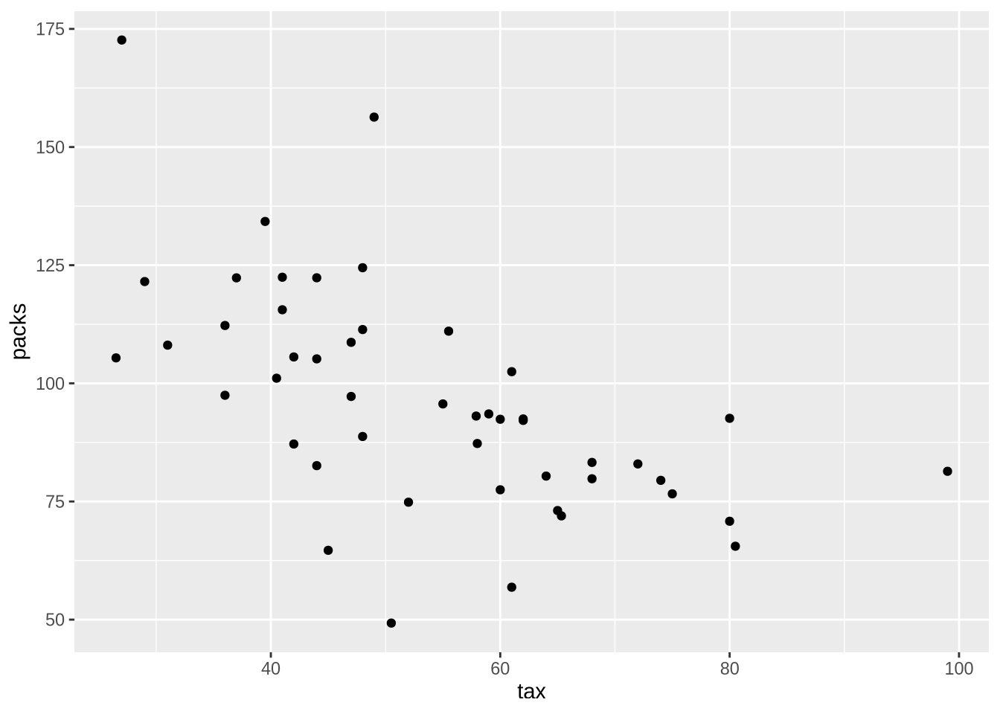
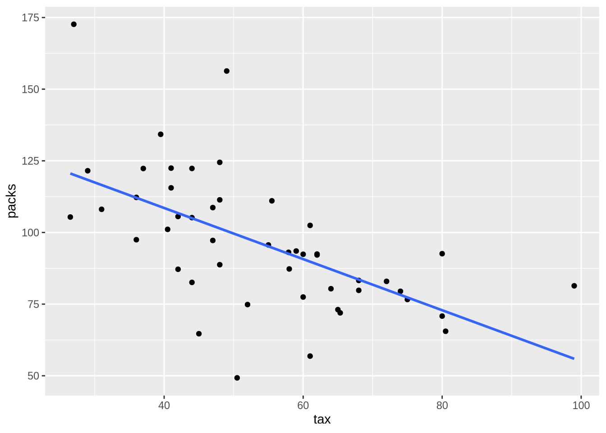
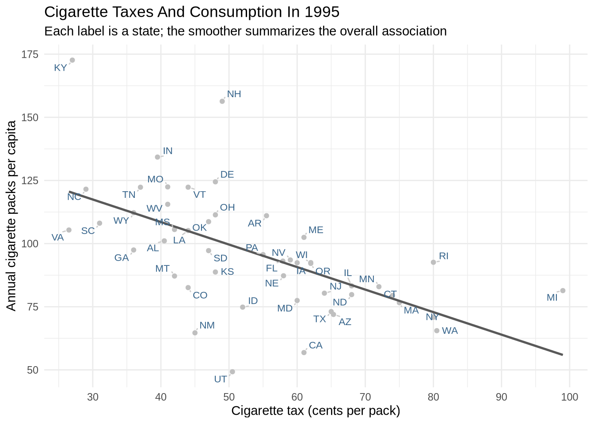
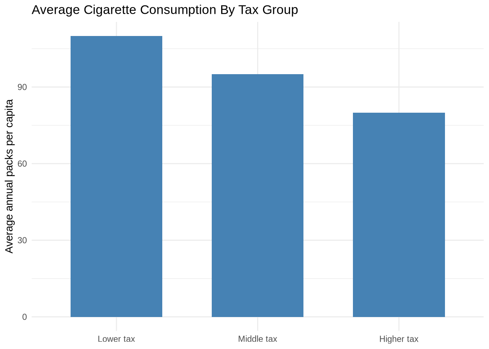
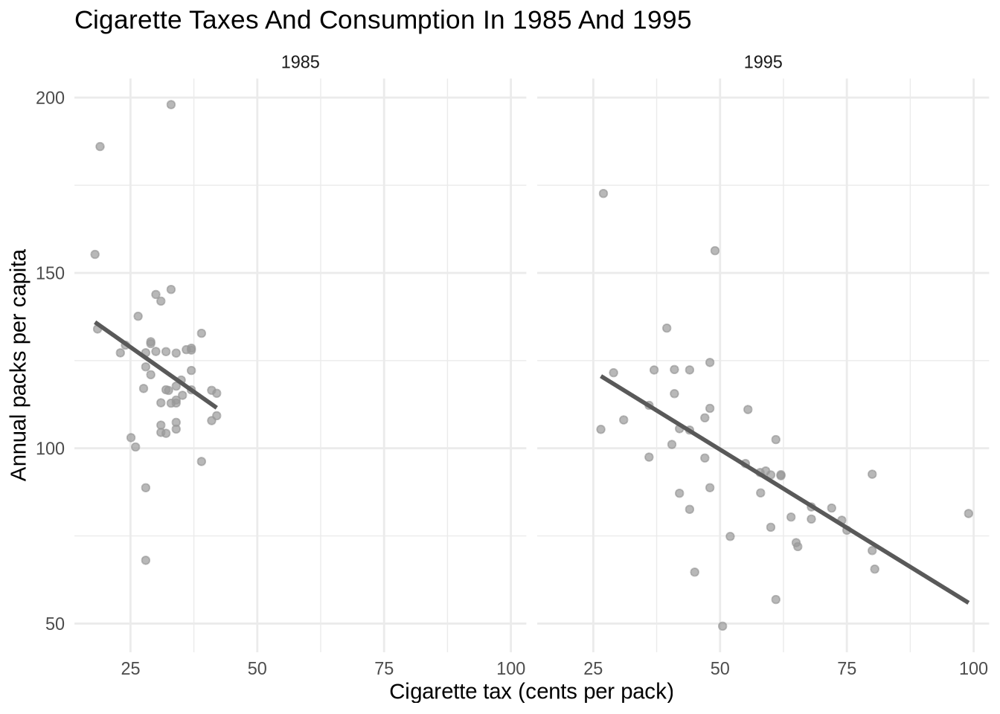
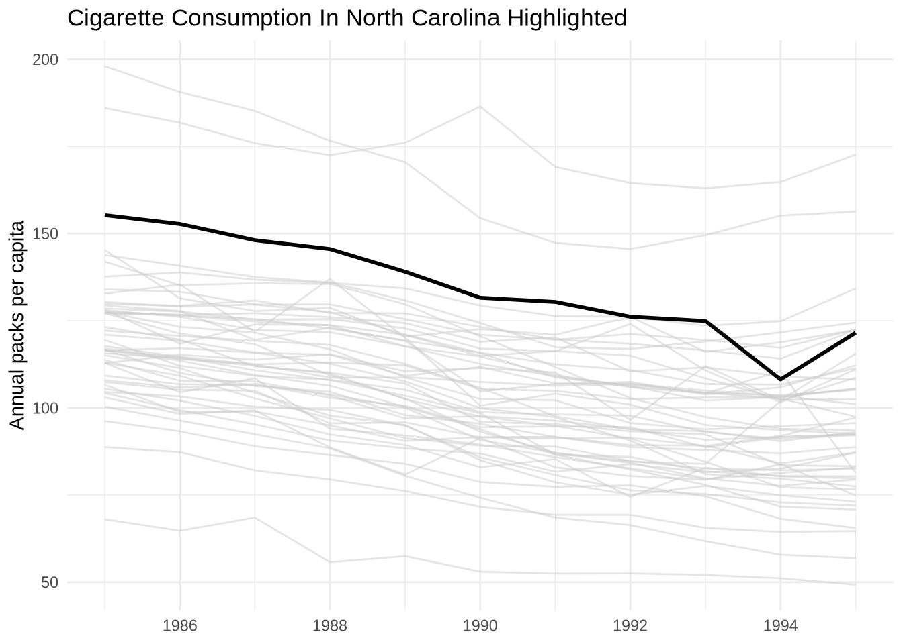
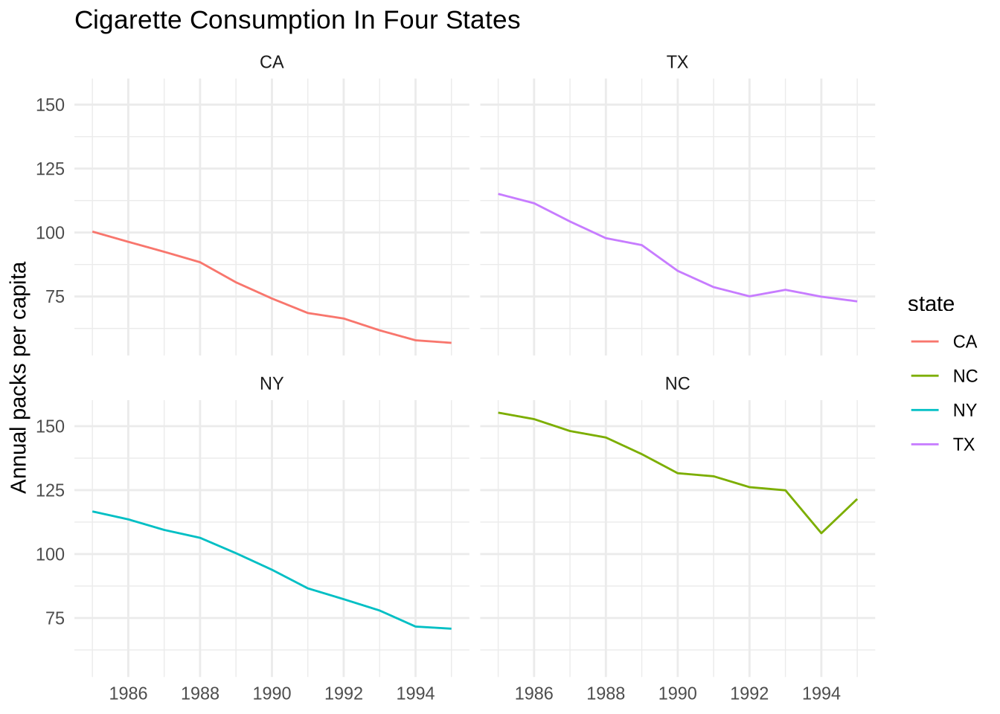

library(tidyverse) # Core data import, transformation, and plotting tools
library(ggrepel) # Separate overlapping text labels on plots
cigarettes_raw <- read_csv("Data/cigarettes/cigarettesSW.csv", show_col_types = FALSE)6 From Question to Final Figure
6.1 Learning Goals
By the end of this chapter, the main goals are:
- move from a panel dataset to a focused cross-section
- compare a detailed scatterplot with a compressed grouped summary
- keep labels and axis units aligned with the substantive variables
6.2 The Question
For this case study, the working question is:
How do state cigarette taxes relate to cigarette consumption, and what is the clearest way to show that relationship?
The focus here is narrower than in the earlier draft of this chapter. Rather than comparing several possible predictors, this version stays with one substantively important pair of variables: cigarette taxes and cigarette consumption.
6.3 Load Data
This dataset records cigarette consumption and related state-level variables in 1985 and 1995. packs is annual cigarette packs per capita, and tax is cigarette tax in cents per pack.
6.4 Step 1: Inspect The Data
skimr::skim(cigarettes_raw)| Name | cigarettes_raw |
| Number of rows | 96 |
| Number of columns | 12 |
| _______________________ | |
| Column type frequency: | |
| character | 1 |
| numeric | 11 |
| ________________________ | |
| Group variables | None |
Variable type: character
| skim_variable | n_missing | complete_rate | min | max | empty | n_unique | whitespace |
|---|---|---|---|---|---|---|---|
| state | 0 | 1 | 2 | 2 | 0 | 48 | 0 |
Variable type: numeric
| skim_variable | n_missing | complete_rate | mean | sd | p0 | p25 | p50 | p75 | p100 | hist |
|---|---|---|---|---|---|---|---|---|---|---|
| year | 0 | 1 | 1990.00 | 5.03 | 1985.00 | 1985.00 | 1990.00 | 1.99500e+03 | 1995.00 | ▇▁▁▁▇ |
| cpi | 0 | 1 | 1.30 | 0.23 | 1.08 | 1.08 | 1.30 | 1.52000e+00 | 1.52 | ▇▁▁▁▇ |
| population | 0 | 1 | 5168866.32 | 5442344.66 | 478447.00 | 1622606.50 | 3697471.50 | 5.90150e+06 | 31493524.00 | ▇▂▁▁▁ |
| packs | 0 | 1 | 109.18 | 25.87 | 49.27 | 92.45 | 110.16 | 1.23520e+02 | 197.99 | ▂▇▇▁▁ |
| income | 0 | 1 | 99878735.74 | 120541138.18 | 6887097.00 | 25520384.00 | 61661644.00 | 1.27314e+08 | 771470144.00 | ▇▁▁▁▁ |
| tax | 0 | 1 | 42.68 | 16.14 | 18.00 | 31.00 | 37.00 | 5.08800e+01 | 99.00 | ▇▆▃▂▁ |
| price | 0 | 1 | 143.45 | 43.89 | 84.97 | 102.71 | 137.72 | 1.76150e+02 | 240.85 | ▇▁▅▂▂ |
| taxs | 0 | 1 | 48.33 | 19.33 | 21.27 | 34.77 | 41.05 | 5.94800e+01 | 112.63 | ▇▅▂▁▁ |
| real_price | 0 | 1 | 108.28 | 17.36 | 78.97 | 95.45 | 103.54 | 1.18090e+02 | 158.04 | ▅▇▃▂▁ |
| real_tax | 0 | 1 | 32.33 | 8.66 | 16.73 | 26.94 | 31.17 | 3.80100e+01 | 64.96 | ▃▇▃▁▁ |
| real_taxs | 0 | 1 | 36.46 | 10.34 | 19.77 | 29.49 | 34.82 | 4.20800e+01 | 73.91 | ▅▇▃▁▁ |
cigarettes_raw |>
summarize(
states = n_distinct(state),
years = n_distinct(year),
first_year = min(year),
last_year = max(year)
)# A tibble: 1 × 4
states years first_year last_year
<int> <int> <dbl> <dbl>
1 48 2 1985 1995The data form a small panel, with each state observed in two years.
Before narrowing to a single year, it is worth looking at how the tax variable is distributed across states in each year. A density plot is well suited to this: it shows the shape of the distribution without reducing it to a single number, and overlaying both years in one panel makes the shift between them easy to see.
ggplot(cigarettes_raw, aes(x = tax, fill = factor(year), color = factor(year))) +
geom_density(alpha = 0.35, linewidth = 0.8) +
labs(
title = "State Cigarette Tax Distributions In 1985 And 1995",
subtitle = "Densities are overlaid in one panel for direct comparison",
x = "Cigarette tax (cents per pack)",
y = "Density",
fill = "Year",
color = "Year"
) +
theme_minimal()
A few things are worth noticing here. year is numeric in the data, so it is wrapped in factor() to treat it as a discrete grouping variable — otherwise ggplot2 would try to give it a continuous color gradient instead of one fill per year. Both fill and color are mapped to the same variable so that each density gets a colored outline as well as a translucent fill, and alpha = 0.35 in geom_density() keeps both years visible where they overlap. The overall pattern is that the 1995 distribution sits noticeably to the right of the 1985 distribution, which means taxes were substantively higher across states a decade later.
The density plot is not the only way to compare these distributions. Two other common choices show the same information with different tradeoffs.
A boxplot compresses each year’s distribution into a small five-number summary: median, quartiles, and whiskers. The result is compact and easy to read when several groups need to be compared side by side.
ggplot(cigarettes_raw, aes(x = factor(year), y = tax, fill = factor(year))) +
geom_boxplot(alpha = 0.5, width = 0.5) +
labs(
title = "State Cigarette Taxes By Year",
subtitle = "Boxplots compress each distribution into a five-number summary",
x = "Year",
y = "Cigarette tax (cents per pack)",
fill = "Year"
) +
theme_minimal() +
theme(legend.position = "none")
The legend is suppressed because the x-axis already labels the two groups. Boxplots are good at center-and-spread comparisons but hide the actual shape of the distribution — for example, bimodality or skew would not show up at all.
A violin plot keeps the side-by-side compactness of a boxplot while restoring the shape information from the density plot. Each “violin” is a symmetric density curve, so wider regions indicate more states concentrated at that tax level.
ggplot(cigarettes_raw, aes(x = factor(year), y = tax, fill = factor(year))) +
geom_violin(alpha = 0.5) +
labs(
title = "State Cigarette Taxes By Year",
subtitle = "Violin plots combine the compactness of boxplots with the shape of densities",
x = "Year",
y = "Cigarette tax (cents per pack)",
fill = "Year"
) +
theme_minimal() +
theme(legend.position = "none")
The three plots tell the same basic story with different emphasis. Density overlays make the shift between years most obvious; boxplots make the central tendencies easiest to compare numerically; violin plots sit between the two. The choice usually depends on whether the reader cares more about shape, summary statistics, or both.
6.5 Step 2: Narrow To One Year
Here the focus shifts to 1995.
cig_1995 <- cigarettes_raw |>
filter(year == 1995) |>
select(state, year, packs, tax, income, price, taxs)
cig_1995# A tibble: 48 × 7
state year packs tax income price taxs
<chr> <dbl> <dbl> <dbl> <dbl> <dbl> <dbl>
1 AL 1995 101. 40.5 83903280 158. 41.9
2 AR 1995 111. 55.5 45995496 176. 63.9
3 AZ 1995 72.0 65.3 88870496 199. 74.8
4 CA 1995 56.9 61 771470144 211. 74.8
5 CO 1995 82.6 44 92946544 167. 44
6 CT 1995 79.5 74 104315120 218. 86.4
7 DE 1995 124. 48 18237436 166. 48
8 FL 1995 93.1 57.9 333525344 188. 68.5
9 GA 1995 97.5 36 159800448 157. 37.4
10 IA 1995 92.4 60 60170928 191. 69.1
# ℹ 38 more rowsRestricting to one year keeps the state comparison clear and avoids mixing change over time with cross-sectional variation.
The units matter here. tax is measured in cents per pack, so the x-axis should stay in cents rather than being reformatted as dollars. packs is annual cigarette packs per capita.
6.6 Step 3: Try A First Scatterplot
ggplot(cig_1995, aes(x = tax, y = packs)) +
geom_point()
This is a workable first draft, but it still needs structure and labels.
6.7 Class Exercise: Repeat The First Plot For 1985
Time: about five minutes.
Create a 1985 version of the first scatterplot:
- filter
cigarettes_rawtoyear == 1985 - put
taxon the x-axis - put
packson the y-axis - add a title and axis labels
- use
theme_minimal()
Starter code:
cig_1985 <- cigarettes_raw |>
filter(...)
ggplot(cig_1985, aes(x = ..., y = ...)) +
geom_point() +
labs(...) +
theme_minimal()One solution is in Exercises/05-class-exercise-solution.R.
6.8 Step 4: Add A Smoother
ggplot(cig_1995, aes(x = tax, y = packs)) +
geom_point() +
geom_smooth(method = "lm", formula = y ~ x, se = FALSE)
The smoother makes the negative association easier to see. It summarizes the pattern in the cross-section, but it does not by itself establish a causal effect. Higher taxes may reduce smoking, but taxes may also reflect political or cultural differences across states that are related to smoking in other ways.
6.9 Step 5: Label The States Directly
final_plot <- ggplot(cig_1995, aes(x = tax, y = packs)) +
geom_point(color = "gray75", size = 1.4) +
geom_smooth(method = "lm", formula = y ~ x, se = FALSE, color = "gray35", linewidth = 0.9) +
geom_text_repel(
aes(label = state),
color = "steelblue4",
size = 3,
box.padding = 0.2,
point.padding = 0.15,
segment.color = "gray80",
min.segment.length = 0,
seed = 123
) +
scale_x_continuous(breaks = seq(0, 100, by = 10)) +
scale_y_continuous(labels = scales::label_number(accuracy = 1)) +
labs(
title = "Cigarette Taxes And Consumption In 1995",
subtitle = "Each label is a state; the smoother summarizes the overall association",
x = "Cigarette tax (cents per pack)",
y = "Annual cigarette packs per capita"
) +
theme_minimal()
final_plot
This version keeps the state identities visible while still showing the overall pattern clearly.
The main pattern is negative, but not mechanical. Higher-tax states generally cluster at lower levels of cigarette consumption, yet there is still meaningful variation among states with similar tax levels. That is another reason the full scatterplot is more informative than a simple grouped summary.
6.10 Step 6: Build A More Compressed Summary
cig_tax_groups <- cig_1995 |>
mutate(
tax_group = factor(
ntile(tax, 3),
levels = c(1, 2, 3),
labels = c("Lower tax", "Middle tax", "Higher tax")
)
) |>
group_by(tax_group) |>
summarize(
mean_packs = signif(mean(packs, na.rm = TRUE), 2),
mean_tax = signif(mean(tax, na.rm = TRUE), 2),
.groups = "drop"
)
cig_tax_groups# A tibble: 3 × 3
tax_group mean_packs mean_tax
<fct> <dbl> <dbl>
1 Lower tax 110 38
2 Middle tax 95 52
3 Higher tax 80 71This summary is easier to read but less detailed. A continuous tax measure has been collapsed into only three groups.
The grouping step uses ntile(tax, 3) to divide the observed tax values into three roughly equal-sized groups. The factor() wrapper then gives those groups readable labels in a fixed low-to-high order.
It is also useful to see which states sit at the high-tax end of the distribution:
cig_1995 |>
arrange(desc(tax)) |>
select(state, tax, packs) |>
slice_head(n = 8)# A tibble: 8 × 3
state tax packs
<chr> <dbl> <dbl>
1 MI 99 81.4
2 WA 80.5 65.5
3 NY 80 70.8
4 RI 80 92.6
5 MA 75 76.6
6 CT 74 79.5
7 MN 72 82.9
8 IL 68.0 83.3That small table complements the labeled plot. It makes the highest-tax cases easy to identify numerically, while the plot still shows how those states fit into the broader relationship.
6.11 Step 7: Plot The Summary Chart
summary_plot <- ggplot(cig_tax_groups, aes(x = tax_group, y = mean_packs)) +
geom_col(fill = "steelblue", width = 0.65) +
scale_y_continuous(labels = scales::label_number(accuracy = 1)) +
labs(
title = "Average Cigarette Consumption By Tax Group",
x = NULL,
y = "Average annual packs per capita"
) +
theme_minimal()
summary_plot
The bar chart is useful as a compressed summary, but it loses the state-level spread and the continuous tax gradient.
6.12 Step 8: Choose The Final Figure
For the original question, the labeled scatterplot is the better final figure. It preserves the continuous relationship between tax and consumption and keeps the states identifiable.
6.13 Step 9: Finalize And Export
ggsave("final_cigarettes_plot.png", plot = final_plot, width = 8, height = 5, dpi = 300)
ggsave("final_cigarettes_plot.pdf", plot = final_plot, width = 8, height = 5)Saving the figure as an object before export is a small but durable habit. It keeps the workflow readable and makes it easy to reuse the same figure for multiple output formats or sizes.
6.14 Reflection
The core workflow was:
- inspect the panel structure
- narrow the question to one year
- build a first scatterplot
- add a smoother and direct labels
- compare that plot with a compressed summary
- choose the figure that best matches the question
That sequence is common in real work. A useful figure rarely appears fully formed on the first try. It is usually the result of several narrowing and revision decisions.
6.15 Exercises
- Rebuild the final plot for
1985instead of1995. - Replace
taxwithpriceand compare the result. - Recreate the summary chart with four tax groups instead of three and explain what is gained or lost.
These exercises keep the same workflow while shifting the analytical emphasis.
6.16 Extra Material
6.16.1 Extra 1: Compare 1985 And 1995 With Facets
comparison_data <- cigarettes_raw |>
filter(year %in% c(1985, 1995))
ggplot(comparison_data, aes(x = tax, y = packs)) +
geom_point(color = "gray60", alpha = 0.7) +
geom_smooth(method = "lm", formula = y ~ x, se = FALSE, color = "gray35") +
facet_wrap(~ year) +
labs(
title = "Cigarette Taxes And Consumption In 1985 And 1995",
x = "Cigarette tax (cents per pack)",
y = "Annual packs per capita"
) +
theme_minimal()
The two-year cigarettesSW file is enough for a simple cross-section and a two-panel comparison, but it is not ideal for a fuller time-series exercise. For that, the longer cigarette panel included with the course materials is more useful.
6.16.2 Extra 2: Highlight One State Against All Others
This is the first time a date scale appears in this chapter. scale_x_date(date_breaks = "2 years", date_labels = "%Y") tells ggplot2 to treat the x-axis as dates, place tick marks every two years, and print the labels as four-digit years. The "2 years" setting is a human-readable interval, not a subtraction formula.
long_cigarettes <- read_csv("Data/cigarettes/cigarette.csv", show_col_types = FALSE) |>
mutate(year_date = as.Date(paste0(year, "-01-01")))
ggplot(long_cigarettes, aes(x = year_date, y = packpc, group = state)) +
geom_line(color = "gray80", alpha = 0.5) +
geom_line(
data = long_cigarettes |> filter(state == "NC"),
color = "black",
linewidth = 1
) +
scale_x_date(date_breaks = "2 years", date_labels = "%Y") +
labs(
title = "Cigarette Consumption In North Carolina Highlighted",
x = NULL,
y = "Annual packs per capita"
) +
theme_minimal()
This is one of the cleanest highlighting patterns for time series: keep all states for context, but push them into the background so one state becomes easy to follow.
6.16.3 Extra 3: Facet A Small Set Of States
ggplot(
long_cigarettes |> filter(state %in% c("NC", "CA", "TX", "NY")),
aes(x = year_date, y = packpc, color = state)
) +
geom_line() +
facet_wrap(~ forcats::fct_reorder(state, packpc, .fun = mean)) +
scale_x_date(date_breaks = "2 years", date_labels = "%Y") +
labs(
title = "Cigarette Consumption In Four States",
x = NULL,
y = "Annual packs per capita"
) +
theme_minimal()
Faceting works well when a handful of specific states deserve direct comparison and one shared panel would be too crowded.
6.16.4 Extra 4: A Very Simple US State Map
Mapping deserves its own course, but a first state-level map can be made with almost no extra code using the usmap package. plot_usmap() handles the projection, state boundaries, and aesthetics in a single call — the only required inputs are a data frame with a state column (two-letter abbreviations or full names) and the name of the value column to shade by.
library(usmap)
plot_usmap(data = cig_1995, values = "tax", color = "white") +
scale_fill_continuous(
low = "gray90",
high = "firebrick",
name = "Cigarette tax\n(cents per pack)",
label = scales::label_number()
) +
labs(
title = "Cigarette Taxes By State In 1995",
subtitle = "Darker states have higher taxes"
) +
theme(legend.position = "right")A few things are worth noting. plot_usmap() returns a regular ggplot object, so it can be extended with scale_fill_continuous(), labs(), and theme() exactly like any other plot built in this course. The cigarettesSW dataset does not include Alaska or Hawaii, so the map’s default lower-48 view happens to match the data. The chunk is marked eval: false so the book renders even when usmap is not yet installed; install.packages("usmap") enables it.
For most research figures, the lesson from the rest of this chapter still applies: a labeled scatterplot usually answers a quantitative question better than a map. But a map is often the right choice when geographic pattern itself is the point — for example, whether high-tax states cluster regionally.
6.16.5 Extra 5: Discussion Prompt
- What information does the scatterplot retain that the summary bar chart discards?
- When would the compressed summary be preferable anyway?
- What do the time-series views reveal that the 1995 cross-section does not?
6.17 What Comes Next
The final chapter is an extra module on storytelling, light dashboards, export, and agentic AI.
That material extends the workflow without changing its foundation: decide what deserves emphasis, then build the figure around that choice.